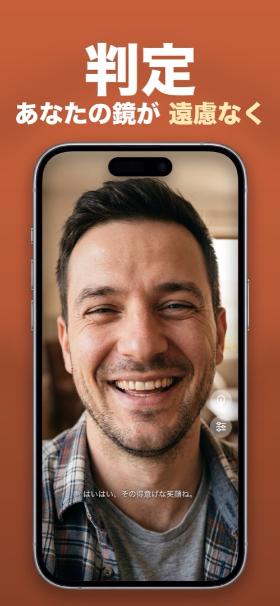

プライバシー
鏡アプリは安全？インストール前に確認すべきこと
アプリにフロントカメラを渡すことにためらうのは当然です。ほとんどの鏡アプリは無害ですが、一部はカメラ映像をくっつけただけの広告配信マシンです。1分ほどで見分ける方法と、Mirrorlyがあなたのカメラで何をしているかを説明します。
危険信号
- 鏡には不要な権限——写真ライブラリ、連絡先、位置情報、マイク。鏡に必要なのはカメラだけ。それ以上は不要です。
- アカウントや登録画面。鏡があなたが誰かを知る必要はどこにもありません。
- App Storeのプライバシー表示にある「トラッキングに使用されるデータ」。広告トラッキングSDKが同乗しているサインです。
- 実は週額サブスクの「無料トライアル」。タップする前に、入手ボタンの下の価格を確認しましょう。
- カメラのフレームがどうなるか書かれていないプライバシーポリシー。沈黙は安心材料ではありません。
良い兆候
- 鏡を開いたときにカメラの権限だけを求める。
- カメラ映像は端末内に留まり、何も取得・保存・送信されないと明記されている。
- 広告なし。アカウントなし。買い切りか、無料。
自分のiPhoneで確認する
設定 → プライバシーとセキュリティ → カメラで、カメラにアクセスできる全アプリを確認し、個別にオフにできます。設定 → プライバシーとセキュリティ → Appプライバシーレポートでは、アプリが不審なサーバーに接続していないかも確認できます。
Mirrorlyがあなたのカメラでしていること
以下はすべてMirrorlyのプライバシーポリシー（英語）に基づくもので、宣伝文句ではありません。
- カメラ映像と端末内の表情分析（コメントを生成するもの）は端末内に留まります。Mirrorlyにはシャッターがなく、写真、動画、カメラのフレーム、顔のデータを取得・保存・アップロードしません。
- アカウント不要。名前、メール、プロフィールを尋ねることはありません。
- 広告なし。
- サブスクなし。最初の3回のミラーチェックは無料。その後はAppleが処理する一回限りの購入で永続的に使えます。購入記録は匿名の識別子でAppleとRevenueCatに送られ、あなたの身元と結びつくことはありません。
- カメラへのアクセスは鏡のためだけに求められ、iOSの設定でいつでも取り消せます。
Mirrorlyでのやり方
そういう鏡アプリを探していたなら：
- App StoreからMirrorlyをインストールして開きます。求められたらカメラのアクセスを許可——それが唯一の権限です。
- 鏡、ライト、ズームを使います。見えているものは何も記録されません。
- 確認したいときは、設定 → プライバシーとセキュリティ → カメラを開いてください。Mirrorlyはそこにあり、他のどこにもありません。

MirrorlyはApp Storeで近日公開予定です。
リングライト・ズーム・最大輝度を備えた、iPhoneの全画面ミラー。3回まで無料、その後は一回限りの購入。サブスクなし、写真の保存なし、アカウント不要、広告なし。
App Storeで近日公開ダウンロード Mirrorly